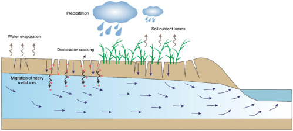

Disaster Awareness • Natural Hazards
DROUGHTS
When water sources dry up, communities feel the impact over months and years. Understand the causes and effects of droughts, and learn how to protect against water shortages.
.jpg)
Disaster Awareness • Natural Hazards
When water sources dry up, communities feel the impact over months and years. Understand the causes and effects of droughts, and learn how to protect against water shortages.

Understanding Droughts
Drought is defined as a long period of arid weather where there is no rain resulting to no water. Unlike any other emergency situation, drought happens gradually and lasts for months and years. It affects not only humans, but also animals, plants, and even the environment.
There is a challenge for people to get enough water for their own use and food sources.
Why It Happens
Understanding weather variations and environmental changes helps us manage water supplies.
.jpg)
In case where there is rain for a prolonged period of time in an area, water tables will start going down. The reservoirs within the area will also start running. This reduces the availability of water for humans, animals, and even plants.
.jpg)
Warm temperatures increase evaporation in rivers and lakes. Warm temperatures will also make the topsoil dry very fast. Water in the ground evaporates very fast and disappears.
.jpg)
Deforestation, and lack of vegetation change the climate conditions. Trees and other plants help maintain moist in the soil. Lack of these plants increases rate at which the soil dries up.
The Consequences
Droughts have far-reaching impacts on human life, health, and food security.
Communities struggle to access enough clean water for drinking, sanitation, and daily needs.
Farmers lose crops because vegetation cannot survive without sufficient moisture in the soil.
Reduced agricultural output leads to scarcity and higher prices for basic food items.
Dry conditions significantly increase the risk of severe wildfires and habitat destruction.
Be Prepared
Conservation strategies and proper water management can safeguard communities.
.jpg)
Reservoirs, dams, ponds, water tanks, and wells should be constructed in such a way that water can be accessed during the dry periods. It is important to have inspection conducted for the current water systems in order to prevent leakage, pollution, and loss of water. A good water distribution system will play an important role in ensuring adequate water supply in various places in the event of water shortage.
Planting of trees in degraded land will ensure that the soil does not become eroded and moisture is conserved in the soil. Conservation of the forest area will play an important role in improving the water sheds and thus the rivers, streams, and groundwater will be improved. Agriculturalists may use mulching, cover crops, and conservation farming in order to conserve moisture in the soil surface.
Construct and preserve reservoirs, small dams, ponds, water tanks, and artificial wells to ensure access to water in case of drought. The present water distribution system should be audited in order to avoid any kind of water loss. Enhancement of water distribution systems will also ensure sufficient water supply to communities, farms, and other service areas during drought periods.
Trees should be planted and damaged land rehabilitated to avoid soil erosion and conserve soil moisture. Watersheds are vital for river/stream systems, and they can be conserved by tree planting and conservation of natural vegetation. Mulching may be practiced by farmers in order to conserve soil moisture.
Stay Safe
Know what practices to follow before, during, and after dry spell emergencies.
We cannot prevent droughts from developing, but through smart water management and conservation, we can minimize their impact.
Explore More Disasters